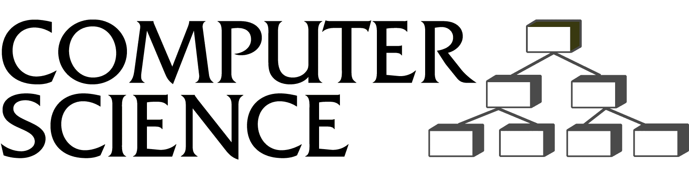

Spring 2001
CSc 645 Advanced Topics in Algorithms:
INFORMATION VISUALIZATION AND GRAPH DRAWING
-
Instructor:
Stephen G. Kobourov
office: Gould-Simpson 734
-
Time and Room: 9:00-10:15AM, Monday and Wednesday, Gould-Simpson 701
-
Prerequisites: Graduate standing in Computer Science and algorithms background, or permission of the instructor.
- Topics: Drawing trees, graphs, and digraphs; Divide and conquer techniques, multi-scale methods, and incremental constructions; Planar graphs and planarization; Orthogonal drawings, upward planarity, and nonplanar orientations; Force-directed methods and n-body techniques; Map labeling and automatic label placement
Pictures are a useful medium for communicating abstract
information. Pictures exploit our natural abilities to quickly
recognize and understand visual patterns. The difference
between an effective and a confusing presentation of the same data can
be subtle, however, and often depends on the layout of the drawing.
Today, the automatic generation of drawings of graphs finds many
applications. Examples include software engineering (data flow
diagrams, subroutine-call graphs, program nesting trees,
object-oriented class hierarchies), databases (entity-relationship
diagrams), information systems (organization charts), and
artificial intelligence (knowledge-representation diagrams). Further
applications can be found in other disciplines,
such as medical science (concept lattices), biology (evolutionary
trees), chemistry (molecular drawings), and cartography (map schematics).
In this course we will study algorithms for automatically generating
clear and readable diagrams for complex conceptual structures.
A graph is an abstract mathematical object that is used to model information.
Typically, graphs are used to represent relational information that can be modeled as
objects (for example, webpages) and relations between these objects
(hyperlinks). Thus, many information visualization systems require
graphs to be drawn so that they are easy to read and understand.
Graph drawing addresses the problem of constructing geometric
representations of graphs, networks, and related combinatorial
structures. Geometric representations of graphs have been
investigated by mathematicians for centuries, for visualization and
intuition as well as for the pure beauty of the interplay between
graph theory, computational geometry, data structures, and algorithms.

[ Top of Page
|
Department Home Page ]
http://www.cs.arizona.edu/course.info/652.html
Last updated August 21, 2000
Cara Wallace
(cara@cs.arizona.edu)